Roadwave Advanced · for BeamNG.drive
Press play in a browser, a music player, a livestream. Press This PC in the game. The sound comes out of the vehicle in BeamNG.drive instead of your speakers, fading and muffling with distance exactly like the music files you already play. Internet radio, a tone that matches the car you are driving, and a playlist builder come with it.
From $6, once. Pay more than that if you want to; nothing changes if you do
not. No licence key, no activation, no phone-home. Windows only. Prices are in US dollars; Patreon converts to your own currency at checkout, so the figure there may read a little differently.
On Ko-fi by default. Buy it on Patreon instead if that suits you
better. Same file either way.
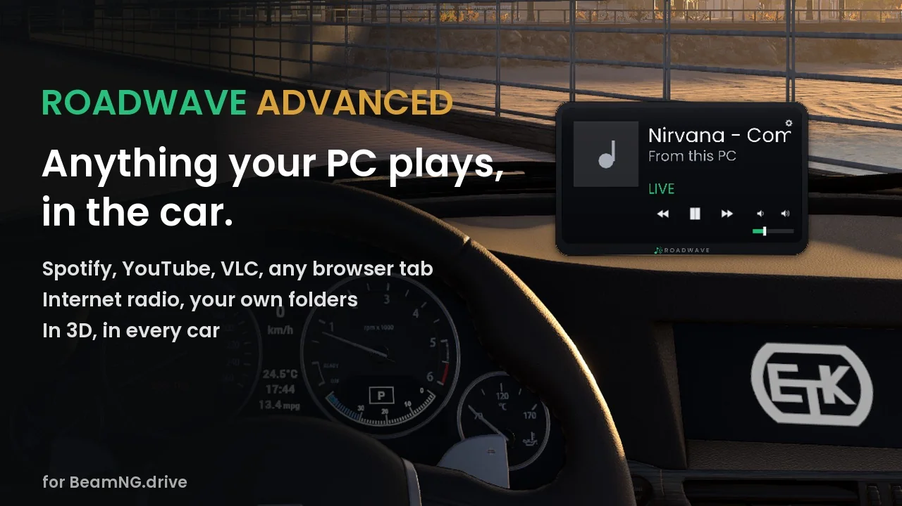
One installer, two small Windows programs, and they work with the mod you already have. Tap or click any screenshot to open it full size.
Press This PC in the game's Radio tab and pick the program you are listening to. Its sound moves into the car: 3D, muffled from outside, fading as you walk away, exactly like a station or a track. It is live: the audio passes through to the game as it plays, and nothing is written to disk. The row is named after what is actually playing rather than after the program, so you can read the track from inside the car. The car's own next, previous and play buttons move the program on your PC as well, with nothing new to bind.
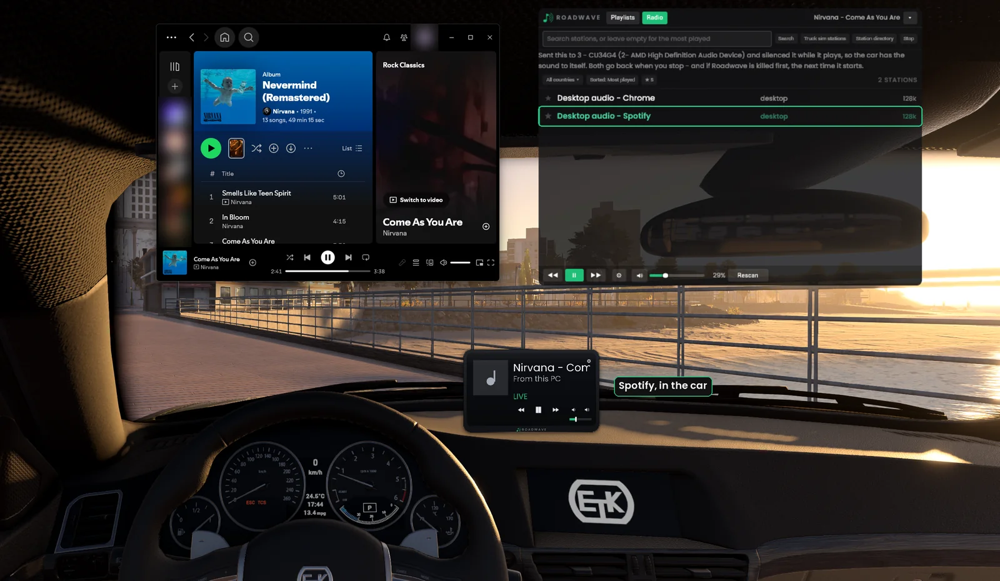
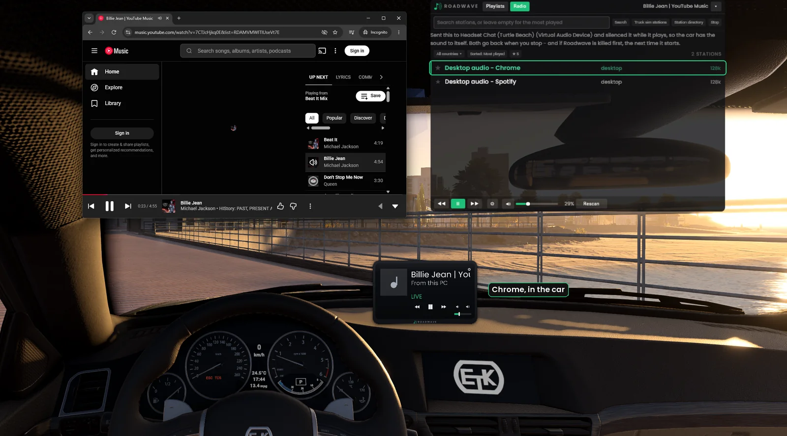
Search by name or tag, filter by country, star the ones you keep coming back to. Station logos appear on the in-car screen, and the list opens on the country of the map you are driving. Add stations of your own in the Jukebox, a local broadcaster or a stream address you already know, and they sit at the top of the Radio tab. If you have Euro Truck Simulator 2 or American Truck Simulator installed, it can read the stations out of your own copy and add them.
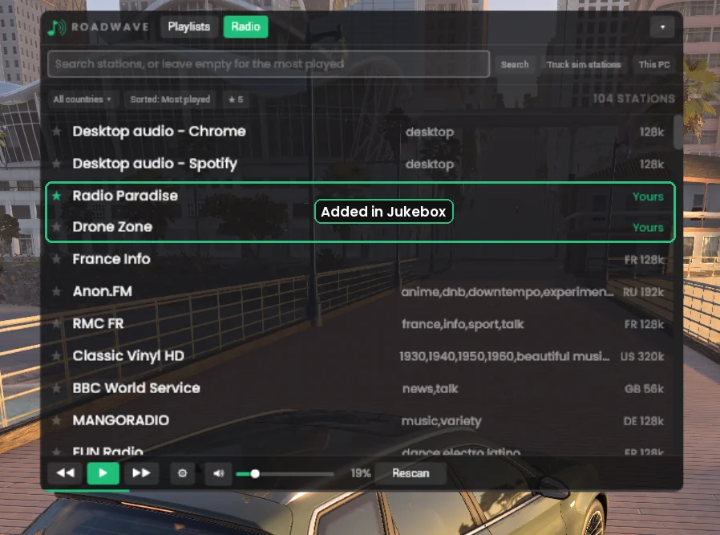
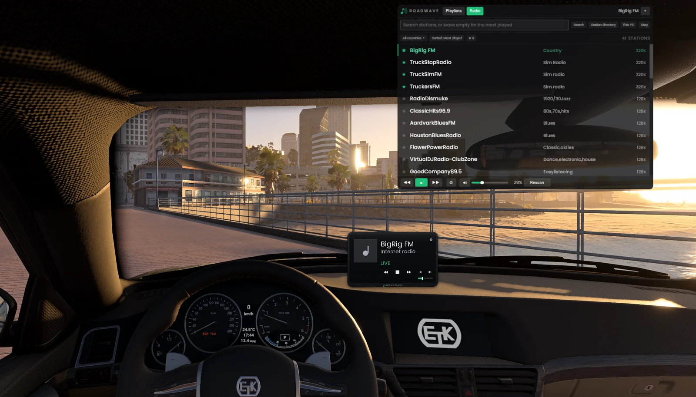
Roadwave reads the price the game publishes for the configuration you are in and shapes the music to match the stereo that car would have: thin and boxy in a cheap one, a factory stereo in the middle of the range, and the dearer the car, the closer it stays to the music as it was recorded. The button names the tier it picked, Basic, Standard, Premium or Exotic, so you can hear the difference and see why. It is off until you switch it on, and the tier follows whichever car you get into.
It hears the starter and tunnels too. The music sags for a moment while the starter turns and comes back as the engine catches, the way a real stereo does when the battery is loaded; an electric car never dips. A tunnel gives the music a short echo sized to the tunnel, and it ends when the sky opens above you again. Shut inside a closed car you hear none of it. With the top down, the windows broken or the camera outside, you hear all of it.
Three things it is not. The price is what the game lists and not a verdict on the car, so a stripped-out race car reads as expensive. A configuration the game gives no price for plays flat, which is about one car in six. And it is a tone curve on the music, not a second set of speakers.
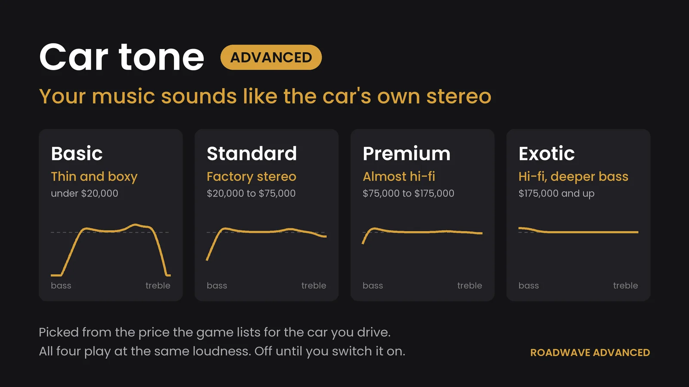
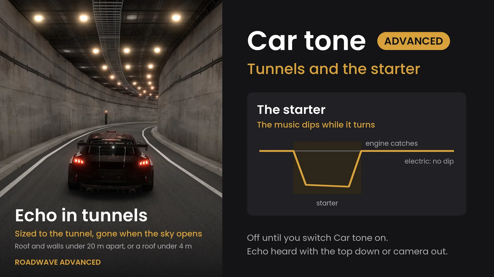
Paste a Spotify or YouTube link, or just type artist and song names, and it builds a playlist folder the mod reads. Your own music folders are searched first: anything you already own is copied, never downloaded. Everything else is matched by running time, because a cover version or a live cut shares a title but not a length.
Or point it at a music folder you already have, on any drive. It plays in the car as one playlist per folder inside it, and nothing is copied, moved or renamed. Track lengths are read from your own files, and artist names too when the files carry them.
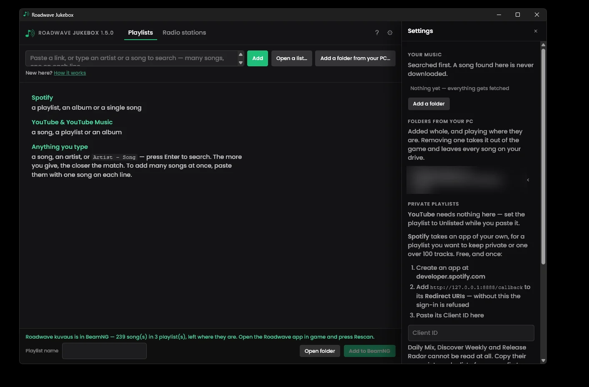
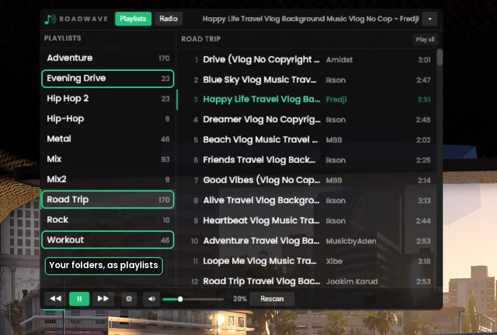
There is a longer walkthrough on YouTube showing the internet radio and the playlist builder in use: Roadwave: full walkthrough. It was recorded before desktop audio existed, so This PC is not in it.
To give the car the sound to itself, This PC moves the program you are listening to onto another output on your machine and silences that one while it plays, then puts both back when you stop. That needs somewhere to move it to. If your PC has only one output, a laptop with nothing but its built-in speakers, a desktop with a single soundbar and no headset, the music comes out of your speakers as well as the car. The game says so on screen when that is your case. This is how Windows works, not something the mod can fix.
It affects that one feature and nothing else. Internet radio, the Jukebox playlist builder and the whole free mod work exactly the same on a PC with a single output.
Advanced sits on top of this. None of it is behind a payment, and none of it ever will be.
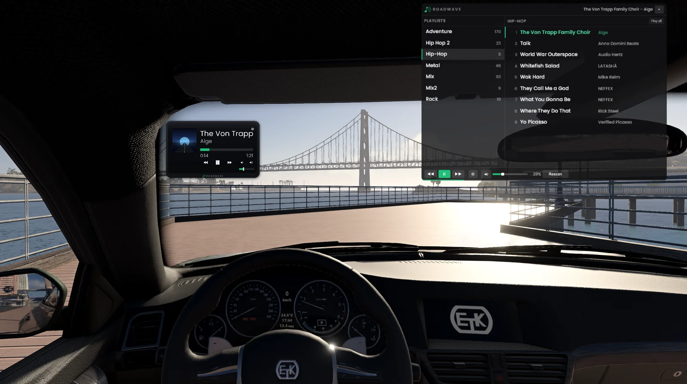
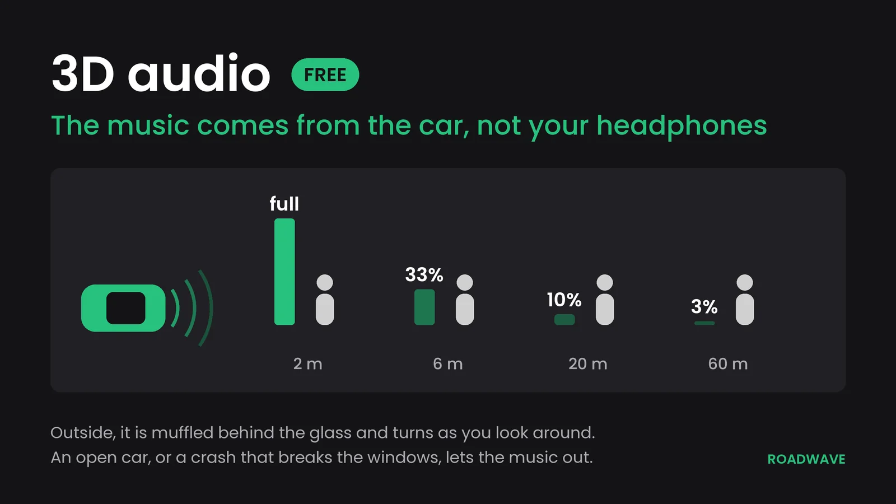
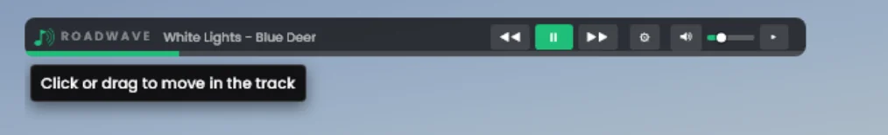
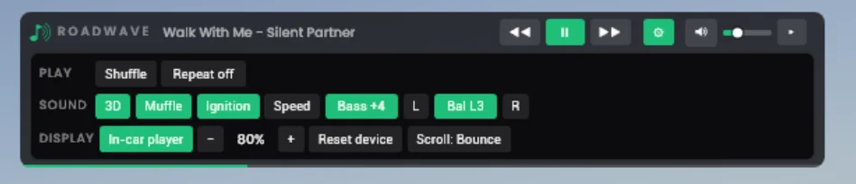
Drag it where you want it, scroll to resize. Every car remembers its own placement, modded cars included.
The music comes from the car and fades and dulls as you walk away from it. One button turns it flat if you would rather.
mp3, ogg, wav, flac. One folder is one playlist. Nothing is bundled and nothing phones anywhere.
Keyboard and gamepad, so you can change track without letting go of the wheel.
A roadster with the top down, an ATV, a motorcycle, or a crash that breaks the windows or tears off a door lets the music out.
Optional: the music comes up over the engine and wind noise as the car goes faster. Off until you switch it on.
The browser collapses to a single line with the track, the transport and the volume. Every setting lives behind a gear.
L, Bal and R in the gear panel, ten steps each way. It turns the far side down rather than moving the sound across, the way a car's head unit does, and it is saved.
Inside the car the music comes from the middle rather than leaning towards the passenger side. Outside the car, the sound is unchanged.
Roadwave has a discussion thread on the BeamNG forum, and it is not decoration. A good part of what is in Roadwave right now is there because somebody asked:
So if something is broken, missing, or just annoying, say so. Bug reports and
ideas are equally welcome, and a rough description beats no report at all. Both programs write a log to
%LOCALAPPDATA%\Roadwave\, and that plus what you were doing usually makes it fixable in
one reply.
For a bug, email garagegraphicsdesigns@gmail.com and attach the log; a message on Ko-fi or Patreon works too. Ideas and questions are just as welcome there, or in the discussion thread, where other players can add to them. A Discord is something I am considering, but it does not exist yet. I would rather point you somewhere real than somewhere planned.
No. The free mod is a complete music player on its own and always will be. Advanced adds desktop audio, internet radio, Car tone and the playlist builder on top of it.
A new version can be flagged in its first days. The installer is not code-signed, and Defender's automatic detection is wary of any new unsigned program until Microsoft has reviewed it. Every version is sent to Microsoft on release day, and so far their analysts have found nothing in any of them. If yours is flagged, email garagegraphicsdesigns@gmail.com and I will send the file's SHA256 so you can check your download.
Any program on the PC: a browser, a music player, a livestream. It has been tested in game with Chrome, the Spotify desktop app and VLC; other players appear in the list, and those three are the ones verified by hand. A few players hold the sound card to themselves (certain foobar2000 and DAC setups do this), and those cannot be played through the car at all. Roadwave notices within a few seconds and tells you rather than sitting there looking broken.
A zip holding one installer plus a readme and instructions. The installer's filename says Jukebox rather than Advanced: Jukebox and Link are the two programs inside it. It installs per-user and needs no admin rights.
No. Windows only, version 10.0.17763 (Windows 10 1809) or newer. The free mod itself runs wherever BeamNG does.
The two Windows programs are unaffected by a game patch. The free mod is the part that occasionally needs a new version, and that arrives through the repository like any other mod update.
Email garagegraphicsdesigns@gmail.com, or message through Ko-fi or Patreon. Both programs write a log to %LOCALAPPDATA%\Roadwave\, and sending it along with what you did and what happened instead usually makes it fixable in one reply. Feature ideas are just as welcome as bug reports.
Only if you want to support the work month to month. The monthly tier is a supporter tier. It does not include Roadwave Advanced. Advanced is a one-time purchase, and buying it on Patreon or on Ko-fi gets you exactly the same file.
If Advanced does not do what this page says and it cannot be fixed together, message within 14 days of buying for a refund through Ko-fi's or Patreon's own request flow. After that there is still help, just without the refund guarantee.
From $6 · a one-time purchase · no licence key · no DRM
There is also a monthly supporter tier on Patreon, for anyone who wants to back the work as it continues. It is not how you get Advanced. That is the one-time purchase above, on either store.